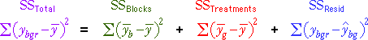

Use this diagram to illustrate how the residuals are found by subtracting block and treatment effects from the values.
Firstly mention the relationship

The diagram initially shows (y -  ) whose sum of squares is the total sum of squares.
) whose sum of squares is the total sum of squares.
Click Remove block effect to adjust all blocks to have the same mean. The resulting sum of squares is now the sum of the treatment and residual ssq.
Finally click Group by treatments to rearrange the observations by treatment and click Remove treatment effect to adjust all group means to be the same as the overall mean. The resulting sum of squares is the residual ssq.